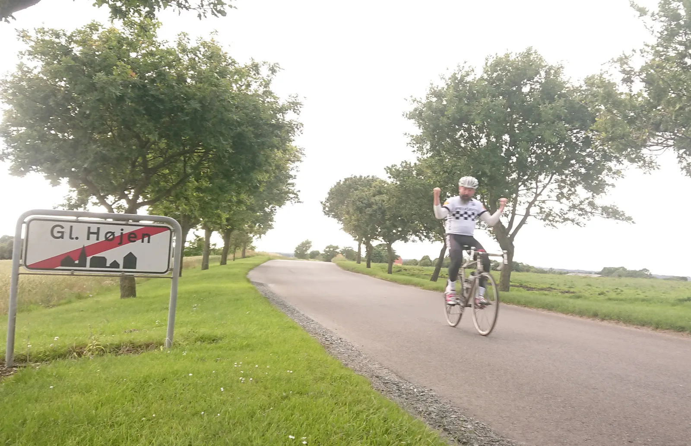

11. etape: Pedersholm – Gl. Højen, Peugeot-offensiven

11. etape af Tour de Denmark blev kørt i den sydlige del af Vejle-Ardennerne. En kort etape på 68 km med 800 højdemeter. Men det var her, på de konstant rullende bakker og de smalle vindblæste belgierveje, at Peugeot Re-Cycled’s Morten Mejsen satte en offensiv ind – og sikrede holdet den første sejr i mange mange år.

Klokker en 13.45 og stemningen i feltet ved startsstregen er trykket. Squadra Moltenis totale dominans i dette års Tour de Denmark, kan tydeligt aflæses i ansigtet på rytterne fra de andre hold. Resignation og afmagt – og matte øjne der udstråler håbløshed. En enkelt Brooklynrytter står grædende og pudser sin frempind med Autosol.
Foran ligger 11. etape fra Pedersholm til byen med TV-tårnet, Gammel Højen. En frygtet etape i Vejle-Ardennerne, der udover at blive kørt på smalle belgierveje også er i et terræn, der konstant byder på rullende bakker. Det er råt og vindblæst.
Peugeot-offensiven
Startsskuddet lyder kl. 14.00 – feltet glider søvnigt afsted. Men ikke længe. Peugeot ReCycled’s Morten Mejsen sætter et angreb ind allerede efter første kilometer – og får hurtigt et hul på 500 meter. Så var rygterne, der florerede i feltet i går alligevel sande. Peugeot-offensiven er indledt.
K-Werk forsøger at lukke, men må opgive. Team Brooklyn forsøger, men må opgive. Velopress har helt resigneret.
Nede i kortegen af servicebiler har Squadra Moltenis sportsdirektør Klaus Maarup Kjærsgaard allerede hornet i bund på den orange Volvo. Han er på vej op til Squadra Moltenis Kaptajn med en vigtig besked:
Niels, nu kører du alene op til Morten Mejsen – og tager dén tvekamp. Resten af holdet bakker af.
Tvekampen
Kaptajn Bjørnsteen spænder Campagnolo-remmene i tå-clipsne en ekstra gang – og træder til. En K-Werk rytter forsøger at lægge sig ind i slipstrømmen, men slår hurtigt op mens han stønner:
Hold æ snut, æ ka ikk mer’. Æ tøs det synd…
Kaptajn Bjørnsteen er hurtigt oppe ved Peugeot’s aggressive terriere. Og selv om han ikke er meget for det, må Morten Mejsen tage handsken op – tvekampen er en realitet.
Det bliver indædt kamp de næste 55 km. De to kaptajner skiftes til at rykke i højre og venstre. Der bliver skubbet og skældt ud, spyttet og hakket – og hvis de to havde haft cykelpumper med, havde de slået hinanden med dem.
Morten Mejsen vinder den klassiske og meget vigtige byspurt i Jordrup, etapens sydligste punkt. Her er det, at Morten Mejsen fornemmer, at hans håbløse projekt måske alligevel har en spinkel chance.
Jordrup er forøvrigt én af de mange små byer i områder Vejle – Vorbasse – Kolding, der engang har været en lille hyggelig by, med små forretninger og en Brugs, hvor drenge med kassebukser og tunede knallerter hang ud. Nu er drengene væk – og disse byer døde. Det er indbyggerne næsten også.
Efter sprinten i Jordrup lægger Mejsen sig klogt hjul af Kaptajn Bjørnsteen de næste 20 km. Lige netop dér, hvor belgiervejene er værst og vinden er hårdest.
Den længe ventede sejr
Målet for dagen etape er i højlandet ved Gammel Højen (105 moh) med det ikoniske Højen 126 m høje TV-tårn, som baggrund.
Duoen Mejsen og Bjørnsteen har nu over 15 minutter til feltet, og de begge ved, at tvekampen skal afgøres på Col de Højen; den sidste bakke op mod mål, omgivet af to svinefarme og i en nærmest ætsende stank af pis og gylle.
Kaptajnen stikker først. Mejsen lukker. Kaptajnen stikker igen. Mejsen lukker. Kaptajnen stikker for 3. gang, men Mejsen sender et slag i nyrerne på Kaptajnen. Og så rykker Mejsen. Med fråde om munden og et vildt blik i øjnene hamrer han de sidste 200 meter op mod mål.


En (for) længe ventet drøm går i opfyldelse. Peugeot har vundet sin første sejr siden det lidt ligegyldige Criterium Torigni-sur-Vire i 1986. Men Morten Mejsen er lykkelig. Han græder – af glæde. Han ser ser om; hvor er TV-kamerane. Han skubber og maser sig gemmen menneskemængden for at komme frem til reporteren fra RTL+
Allez Morten Mejsen 🏁
Allez Peugeot Re-Cycled 🏁
11. etape: Pedersholm – Gl.Højen
1. Morten Mejsen, Peugeot Re-Cycled
2. Niels Bjørnsteen, Squadra Molteni
Klassement:
1. Morten Mejsen, Peugeot Re-Cycled
2. Niels Bjørnsteen, Squadra Molteni
3. Jeppe Thiemer, Squadra Molteni
4. Jens Langergaard, Squadra Molteni
5. Grane Wunderbein Maaløe, Squadra Molteni
6. Jens Stærk Bojesen, Squadra Molteni
7. Lars Munch Larsen, Squadra Molteni
8. Per Sandahl, Squadra Molteni
9. Kristian Blume, Squadra Molteni
10. Svend Seegert, Squadra Molteni
Hviledags-klassement:
1. Pelle Clemmesen, Peugeot Re-Cycled
Hold:
1. Squadra Molteni
2. Peugeot Re-Cycled